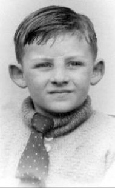

|
We had a terrible Air Raid last night. The Air Raid siren is nearly next door to us where we live in Kathleen Road, and the Ack-Ack guns are at the bottom of the road. Mammy’s nerves are very bad and we must get away from here. [She is 3 months pregnant.]
|
|
The Germans bombed Coventry again last night. |
The city centre destroyedWe had another terrible night of bombing. Up town the Bull Ring was bombed and St. Martin’s Church was badly damaged, also the shops in New Street, the Midland Arcade, High Street and Dale End. In Broad Street a high-explosive bomb destroyed the Prince of Wales Theatre. Everywhere up town was on fire. The bombing was also very bad at Small Heath, Aston and Nechells.
|
Good FridayToday is Good Friday. We had another terrible night, the bombing is getting worse.
|
|
Today is Easter Sunday. |
|
Today is Easter Monday. |
|
I now go to school at Redhill Road. |
|
At school we all had our photographs taken. |

Brian aged 6, at Redhill Road |
|
The German bombed Nottingham last night. This is where Daddy used to live. |
|
The Germans came over again last night and the bombing was very bad.
|
|
We are leaving here tomorrow and going a long way away to escape the bombing. |
A new homeIt is Whit Monday today. We have left 24 Kathleen Road, Hay Mills, and have come to live at 153 Circular Road, Acocks Green. It is very nice and there is an Air Raid shelter at the bottom of the garden. It is a council house. |
The gardenThis is a very nice house with a nice lawn in the front garden, and flower beds and a privet hedge at the front and the sides. In the back garden there is a lawn with two flower beds down the middle, one in front of the other longwise, containing flowers and lettuces. There are also two other flower beds with rose trees on each side of the lawn, and a privet hedge on both sides separating us from next door. At the bottom of the garden is the Air Raid shelter which we get into from the right hand side of the garden. Beyond the shelter is a high fence with a row of poplar trees and the back gardens of the houses in Olton Boulevard East. This is the nicest place we have ever lived in. |
All round the CircleMammy took us for a walk. We can walk all round the circle and come back to where we started. The houses are all in blocks of four but the blocks are different. Looking at our house from the road we are the left hand house of the four. Then there is another block of four beginning to go round the corner into Wetherby Road. This is only a short road. At the bottom is a big traffic island. I think it must be the biggest in Birmingham. The roads leading off are Shirley Road leading to Acocks Green village one way and Shirley the other, and Olton Boulevard East where the 31A buses run. We can go up town on the 31A bus which stops just round the corner, or we can catch the 44 bus down the village. |
NeighboursI played in the garden today. The rose trees are beautiful and all different colours. They have big thorns. There is a flower bed outside the back window, and a prickly bush [cotoneaster]. There is also a flower bed outside the kitchen window. Between them is a wide concrete step leading down to the lawn. Looking down the garden, the people living on the left hand side are Mr. and Mrs. Webb and their daughter Ivy. On the right hand side the people are Mr. and Mrs. Prentice and Ruth, Eileen and Janet. There is also Arthur Prentice but he is in the Navy. There is a tunnel running between their house and the next (like Granma and Grandad’s). Next door is Mrs. Jenkins, and next door to them at the end house live Mr. and Mrs. Gray and Jessica and Kenny. |
Coalhouse in the kitchenThis is a very nice house. It is the best we have ever lived in. The front door is set back from the step in a vestibule. The left hand wall is the wall of the pantry and the right hand wall is the wall of the front room. Opposite the pantry door are the stairs leading to the bathroom and three bedrooms. The smallest bedroom is over the vestibule. Downstairs there is the front room, the back room and the kitchen with a back door leading to the side of the house. Just inside the back door is the coal-house door where we keep the coal. Mammy thinks it is funny having the coal house in the kitchen. When we go for a walk we always go out of the back door and turn left to open the big gate and then we walk down the path to the little front gate which has a latch on it. |
Acocks Green VillageToday we went shopping down the village. There were lots of shops and it was full of people. There is a Woolworth’s and a British Restaurant, also the Public Library and the Post Office and many other shops. There is also another big island. At the bottom of Shirley Road is Warwick Road which goes to town one way and to Olton the other way. If we walk down Shirley Road on the left-hand side there is the Public Library, and round the corner is the New Inn, Westley Road and the Warwick Cinema. The Outer Circle No 11 bus comes down Westley Road, turns left into Warwick Road and then straight away into Dudley Park Road. I don’t know where it goes after that. Also in Warwick Road just past Dudley Park Road is St. Mary’s Church but it has been bombed and one side of the roof has got a cover over it. It is a very nice village. |
Fox Hollies ParkMammy has taken us to a lovely park. It is not very far away. We turned left out of the gate and started walking round the circle. We crossed over Starcross Road and kept walking round the circle until the next road which is called Fanshawe Road. We walked down there, crossed over Dolphin Lane and then came to Pool Farm Road. Opposite us was the entrance to the park. It is a beautiful park and very big, sloping down to Gospel Lane. Just inside the park is a drinking fountain with not much water in it, and behind it a large pool with trees all round marked PRIVATE. We walked all through the park. A lot of children were playing on the chute and roundabouts. At the other end of the park is Shirley Road. There is a stream running all through the park, but the Shirley Road end is concreted and it was nearly dry. |
Hartfield CrescentI now go to School at Hartfield Crescent Infants School. I am in Mrs. Howe’s class [Dorothy Mary Howe]. I have not gone to school very much because of being bombed out and moving to different places. |
|
It is my birthday today. I am 6. |
|
It is Mammy’s birthday today. [She is 29.] |
WEDNESDAY 17th SEPTEMBER 1941
FRIDAY 26th SEPTEMBER 1941
SUNDAY 5th OCTOBER
Previous chapter || Next chapter || Index || Search |